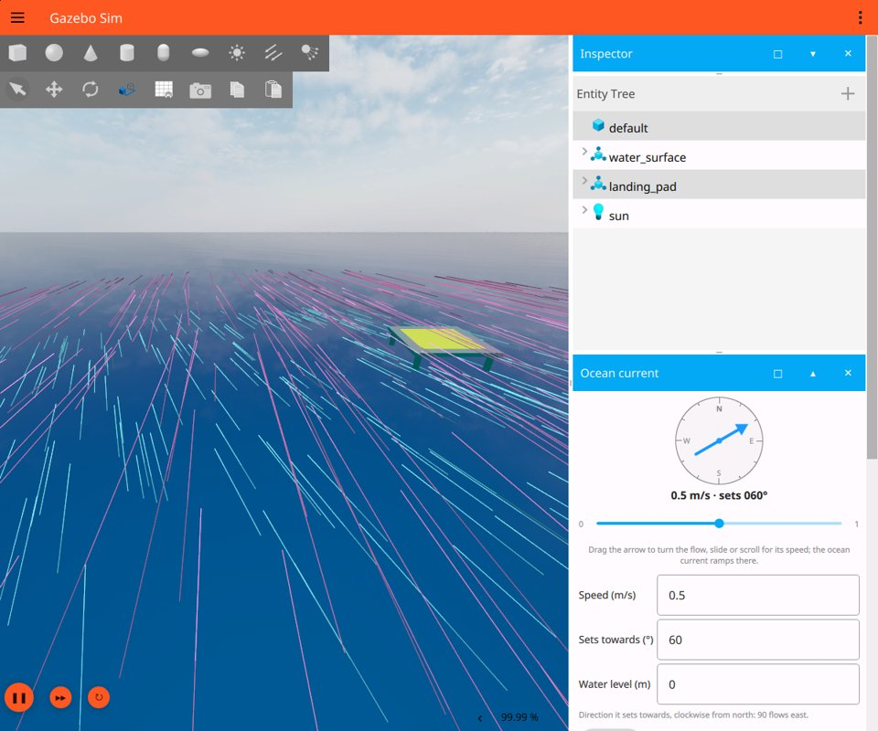
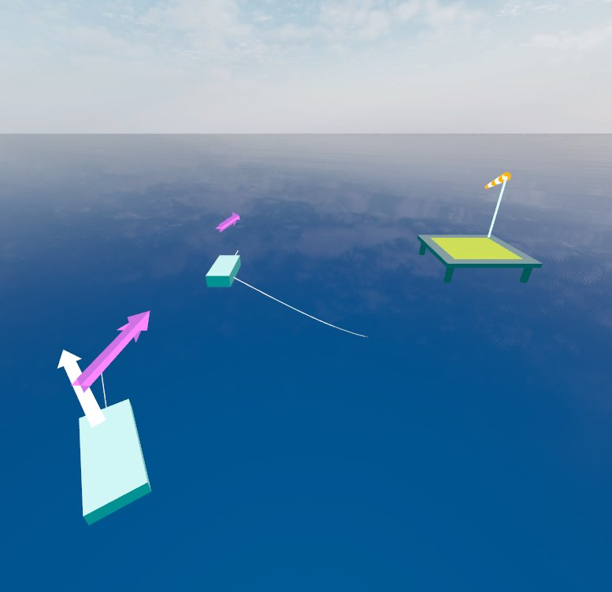

Change and see the wind and the current
Every world here docks three panels on the right of the Gazebo GUI,
Ocean current, Wind and Scenarios. The first two show their
field as the world has it now, let you steer it by hand or set it exactly,
draw it on the water as flow trails or arrows coloured by speed, and show
the water and the wind each vehicle meets; the wind panel also flies wind
socks. The third steers both fields to named conditions and runs a demo. They need no ROS:
they work the same with gz sim on its own and with every launch.

Flow trails: a 0.5 m/s current setting 060 (cyan) and a 10 m/s wind from 250 with direction gusts (magenta), drifting across the water.
Steer them by hand
The compass at the top of each panel draws the flow, where the air or the water goes, whatever convention the numbers follow:
Drag the arrow to turn the flow;
move the slider, or turn the mouse wheel over the compass, for its speed.
The panel steers the field to where you point in small steps, the direction
the short way round, no faster than the current at 0.5 m/s and 90° a
second, the wind at 5 m/s and 90° a second of wall clock, so the trails,
the vehicles and the numbers under the compass turn smoothly. Each step is
still a step for the server: it is not a ramp of the field in simulation
time, and steps sent while the world is paused all land when it runs again.
If something else changes the field while a panel steers it (another
panel, a second GUI, gz topic or ROS), the panel stops and says so.
Set them exactly
Each panel keeps its field’s own convention:
Ocean current: speed (m/s), the direction it sets towards in degrees clockwise from north (90 flows east), and the water level (m).
Wind: speed (m/s) at the wind’s reference height, the direction it comes from in degrees clockwise from north (270 blows east), and the gusts: the standard deviation of the speed (m/s) and of the direction (degrees), and their correlation times (s).
A wind from 270 and a current setting 090 both go east; their compasses agree even though their numbers do not.
Type a decimal with a point or a comma, 1.5 or 1,5, whatever your
system’s language. Edit the fields and press Apply. The panel sends only
the values you changed, as one message on /world/default/ocean_current/set
or /world/default/wind/set, the same topics gz topic and ROS use. A
field you typed in keeps its text while the world moves, until you press
Apply, or until you steer the field or press a scenario, which drops it.
The world applies a message whole or not at all, and the line beside
Apply says which:
Status |
Meaning |
|---|---|
Steering… |
The panel is stepping the field to where the compass points. |
Stopped steering |
Something else changed the field while the panel steered it: another panel, a second GUI, |
Applied. |
The world took the change. |
Not applied |
The world kept its values: a value out of range, or refused by the model. The server’s log says why. |
Not sent: … is not a number |
A field holds something that is not a number; nothing was sent. |
Not sent: nothing is listening |
Nothing listened on the topic yet, as just after the GUI starts; press Apply again in a moment. |
The fields always show the world’s values, whoever changed them last: the
panel, gz topic or ROS. A world without a wind or an ocean current system
says so in that panel. The reference height, the roughness length and the
rest stay in the world file; see the
wind and
ocean current
parameters.
See them
Show picks how a panel draws its field on the water:
Trails: a few hundred particles drift with the field and leave short trails that fade behind them, in a soft disc around the world’s origin. Gusts sweep through the wind’s trails; turn the current and its trails swing. The current’s particles move eight times faster than the water, so a slow current still visibly flows; the wind’s move at its own speed.
Arrows: a grid of arrows, the current’s 4 m long per m/s, the wind’s 0.3 m.
Off, the default, so the scene looks as it always did.
Both are coloured by speed, from still to the top speed shown on the legend: the water from deep blue through cyan to white (1 m/s by default), the air from indigo through magenta and orange to yellow (20 m/s). They are the field as the vehicles feel it, sampled from the world with the same code, so a current model that varies with place shows its pattern. The current is drawn just above the water level; the wind at a height above the water, 3 m by default, and sampled at that height, so the profile with height shows. Change the area’s side, the arrows’ spacing and the wind’s height in the panel.
What each vehicle meets
Tick On the vehicles in a panel to draw, on every vehicle (every model that is not static and has a link, so a floating buoy counts too), the water and the wind at its origin:
Ocean current: the water flowing past its hull at its origin, a solid arrow 1 m above it: the current there less the vehicle’s velocity over the ground. A boat drifting with the current has none; a moored one, or one holding station, shows the whole current. Also its track over the ground, fading over the last 30 s, and a line along its heading, so a boat crabbing in a current shows its track and its heading apart.
Wind: the apparent wind, a solid arrow 2 m above it: the wind there less the vehicle’s velocity, the wind a sailor on board would feel.
The arrows are coloured by speed like the field, and drawn twice, flat and upright, so they read from above and from a camera low over the water. The GUI only sees the vehicles’ poses, so their velocity is estimated from how those change. The arrows are a picture, not the forces: the hydrodynamics asks the current at the centre of mass, marked shapes at the centre of each wet part, and the windage at each marked shape.

A moored boat (front) feels the whole current and the wind; a drifting one feels only the wind, and leaves its track. The wind sock on the landing pad flies downwind.
Wind socks
The wind panel flies a striped wind sock at each <wind_sock> the world
places (the open water world has one on the landing pad). A sock points
where the wind goes and droops in light air: down by 80° in calm, straight
out from 7.7 m/s (15 knots) up, and swinging with the gusts, sampled where
it flies. Wind socks in the wind panel turns them off.
Scenarios and the demo
The Scenarios panel steers both fields to named conditions in one click, through the same steering as the compasses:
Preset |
Current |
Wind |
|---|---|---|
Calm |
slack |
still |
Tidal ebb |
0.8 m/s setting 225° |
3 m/s from 200°, light gusts |
Fresh breeze |
0.3 m/s setting 090° |
10 m/s from 270°, gusts of 2 m/s and 10° |
Squall |
0.5 m/s setting 135° |
18 m/s from 300°, gusts of 5 m/s and 25° |
Demo steps through them in order, staying on each a while (12 to 25 s of simulation time) and starting again after the last: leave it running on a stand or during a talk. It follows simulation time, so pausing the world pauses it.
In your own world
Add either panel, or both, to the world’s <gui> block; every element but
the filename is optional:
<plugin filename="OceanCurrentPanel" name="Ocean current">
<gz-gui>
<title>Ocean current</title>
<property type="string" key="state">docked</property>
</gz-gui>
<display>trails</display> <!-- off, arrows or trails -->
<max_speed>1</max_speed> <!-- m/s of the last colour, and the slider's span -->
<extent>40</extent> <!-- side of the area, m -->
<spacing>5</spacing> <!-- between two arrows, m -->
<center_x>0</center_x> <!-- centre of the area -->
<center_y>0</center_y>
<scale>4</scale> <!-- m of arrow per m/s -->
<particles>400</particles> <!-- trails -->
<trail_length>8</trail_length>
<lifetime>6</lifetime> <!-- s a particle lives, at most -->
<speedup>8</speedup> <!-- particles move this many times the flow -->
</plugin>
<plugin filename="WindPanel" name="Wind">
<gz-gui>
<title>Wind</title>
<property type="string" key="state">docked</property>
</gz-gui>
<display>trails</display>
<height>3</height> <!-- m above the water -->
<on_vehicles>true</on_vehicles>
<wind_sock>9.6 -9.6 1</wind_sock> <!-- a pole's foot; repeat it -->
<sock_height>3</sock_height>
</plugin>
<plugin filename="ScenarioPanel" name="Scenarios">
<gz-gui>
<title>Scenarios</title>
<property type="string" key="state">docked</property>
</gz-gui>
<demo>false</demo> <!-- start the demo with the world -->
<!-- Presets of your own replace the built in ones: -->
<preset name="Spring tide" dwell="30">
<current speed="1.2" direction="200"/>
<wind speed="6" direction="180" speed_gust="1" direction_gust="10"/>
</preset>
</plugin>
<on_vehicles> works on the ocean current panel too.
The wind panel takes the same elements as the current panel, with its own
defaults (20 m/s top speed, 0.3 m per m/s, 4 s lifetime, no speed-up). The
drawing goes through Gazebo’s MarkerManager, which every world here loads;
a world of your own needs it in its <gui> too. Both panels are also in the
GUI’s plugin menu (top right, Ocean Current Panel and Wind Panel)
for a world that does not list them. The package gz_maritime_gui installs
them and puts their folder on GZ_GUI_PLUGIN_PATH when the workspace is
sourced.